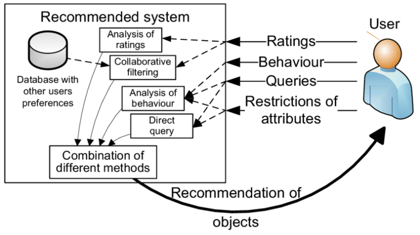
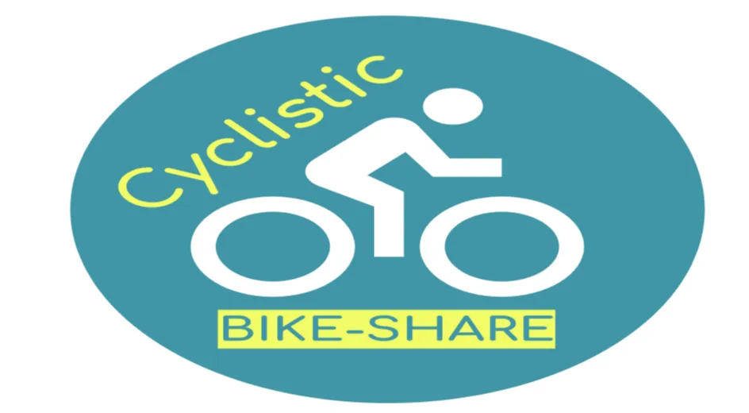
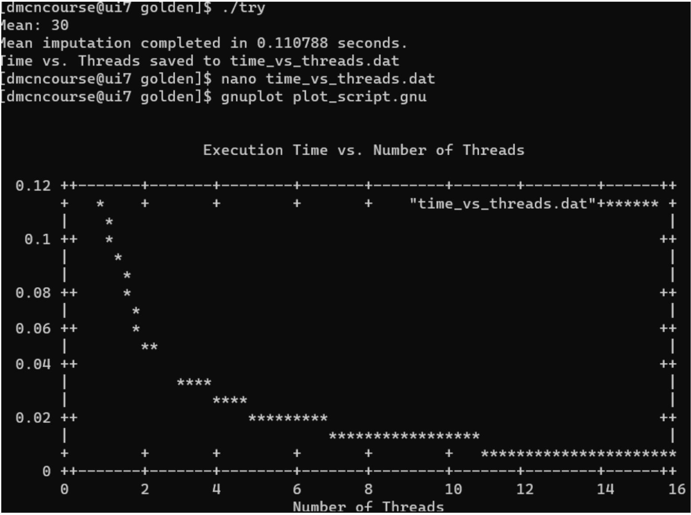

001 : Fake News Detection using a Chatbot

In the IBM Machine Learning Capstone project, I was able to implement a recommender system project. The main goal of this project is to improve learners’ learning experience via helping them quickly find new interested courses and better paving their learning paths.
The tasks I performed:
1.Collecting and understanding data
2.Performing exploratory data analysis on online course enrollments datasets
3.Extracting Bag of Words (BoW) features from course textual content
4.Calculating course similarity using BoW features
5.Building content-based recommender systems using various unsupervised learning algorithms, such as: Distance/Similarity measurements, K-means, Principal Component Analysis (PCA), etc.
6.Building collaborative-filtering recommender systems using various supervised learning algorithms: K Nearest Neighbors, Non-negative Matrix Factorization (NMF), Neural Networks, Linear Regression, Logistic Regression, RandomForest, etc.
7.Creating an insightful and informative slideshow and presenting it.
8.Tools: Jupyter Notebooks and Watson Studio; Libraries: Pandas, NumPy, Matplotlib, Seaborn, ipython-sql, Scikit-learn, ScipPy, Keras, and TensorFlow.
002 : Recommender System

1.Cyclist Scenario & Google Fiber Scenario was my capstone project for the Google Business Intelligence course. During the project,
2.Learned how an actual project is done at the workplace, approaching a project using structured thinking by following specific steps in a specific order.
3.Meeting notes was provided, understood the project background, stakeholders, team members, Project approvals and dependencies, project goals, the deliverables and metrics, measure success, asking right questions and other considerations.
4.Organising tasks into milestones, main importantly created documents Stakeholder requirement document, Project requirement document, strategy document.
5.Learned Google DataFlow but I have used BigQuery console created target tables for the final dashboard from the datasets provided.
6.Used the target table created to design a BI viz that will address questions, started by creating a mockup, then made my charts, a dashboard, and a brief presentation that summarises the work I did on this project.
7.Skills, Tools & Technologies: Data Modeling, Business Analysis, Bigquery, Sheets, Data Analysis, Data Pipelines ETL/ELT, Business Process, Tableau Software, Data Visualization(DataViz), Business Intelligence, SQL, Dashboarding and Reporting, KPI, Design Patterns, Database Schemas, Data storage systems, database and Pipeline optimisation.
003 : Cyclist Scenario & Google Fiber Scenario
004 : Forecasting Weight Dynamics and Visualizing Historical Data - A Time Series Analysis
005 : Sauce & Spoon

006 : Analyzing FitBit Fitness Tracker App data for Bellabeat
007 : Statistical Data Analysis on Human Activity Recognition Data Set
008 : Predicting Housing Price of California Census Data using Machine Learning

It is a Final Group Project, for Data Management & Comuputer Networks. We have used The UNINA cluster(University): 32 nodes, 128 GPUs. Accessing the cluster: the user interface.
Programming with MPI and Open MPI. Missing value imputation for titanic dataset using mean imputation technique in Openmp and plotted a graph for execution time Vs number of threads.
We have submitted our work to LECTURER: Prof. Guido Russo which got a great Result.